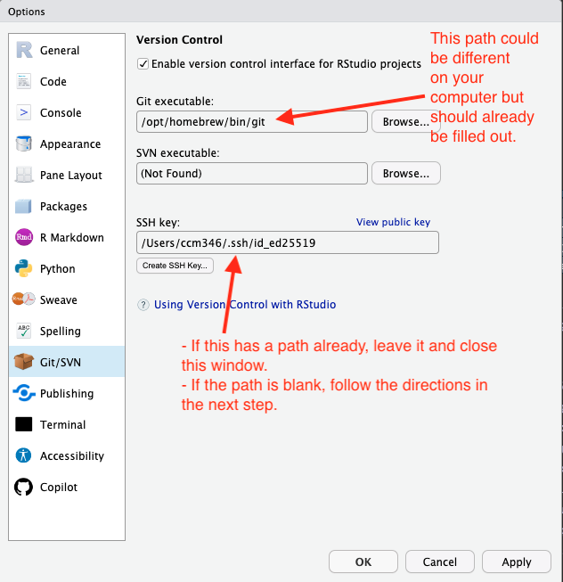
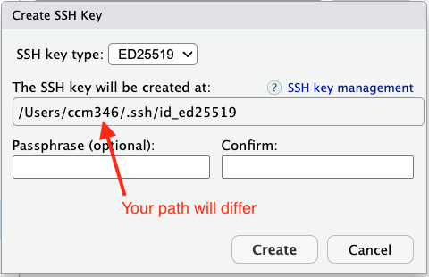
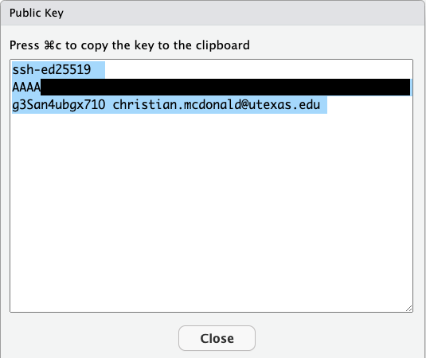
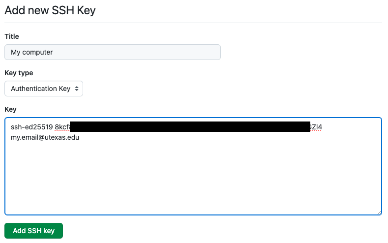

11 Installation and setup
🎯 Goal: By the end of this chapter, you’ll have Git and GitHub set up and be ready to create a version-controlled project in RStudio.
11.1 Install the Tools
Before we can get started, we’ll need to make sure that our computers (often referred to as our local machines) are have the tools we need. Let’s do that by completing the following steps:
Install Git
- Go to: https://git-scm.com/downloads
- Download and install Git
- Default install settings are fine
Sign up for a Github account:
- Go to: https://github.com
- Click Sign up
- Fill in your email and password
- Choose a username. Keep this professional enough that you wouldn’t mind a professor, colleague or future employer seeing it.
CautionRemember, the username you set here will be visible (read: public) in any future projects you push to GitHub. If you choose to use a nickname or alias instead of your real name, keep it professional enough that you wouldn’t mind future colleagues or a potential employer seeing it if needed to share your work.
11.2 Configure Git
After installing Git, you’ll need to go through a one-time process to configure it with your username and email on your computer. We’ll use the terminal to do this.
Step 1: Start a new terminal session in RStudio
- Launch R Studio
- Click on the terminal tab to start a new session (if there isn’t one already).
Tip: The terminal tab is located next to the Console tab. If can’t find the terminal tab, go to
Tools > Terminal > Move Focus to Terminal.
Step 2: Set your Git username
First, we’ll set your user.name so Git knows who you are. The username you set here will be associated with future commits to your projects which may be public, so this name should also be professional enough that you wouldn’t mind a future employee seeing it. We recommend using your first name and last name.
Run the following command from your terminal, replacing “Your Name” with your name (including the quotation marks):
git config --global user.name "Your Name"Check to see if you successfully set your name by running the command:
git config user.name
You should see a terminal response with the username you entered.
If you didn’t get the response expected, then try again. Remember, be careful about punctuation.
Step 3: Setting your git email
Now we’ll set your user.email.
The email you enter needs to match the one you used to setup your Github account. If it doesn’t, you’ll run into permissions issues later.
In your terminal, type and run the following command, but replace the email with your email (including the quotation marks):
git config --global user.email "email@example.com"
Your git email should be the same as the one you use on GitHub so your commits will be linked correctly. If it doesn’t match, you may run into permissions issues later on.
Step 4: Set your default branch
Next, we’ll set git to name your default branch “main” instead of “master” as this is a new standard.
In your terminal, run this:
git config --global init.defaultBranch main
You won’t get a response unless there was a problem.
Step 5: Ensure a clean git history
Lastly, we’ll set a preferred Git configuration for our UT-Data projects. While the exact behavior is a bit complex, this setting helps keep our commit history clean and is recommended in this detailed explanation.
In your terminal, run this:
git config --global pull.ff only
11.3 Setup your SSH Keys (Authenticating)
Authentication is just a fancy term to describe proving that you are who you say you are. In other words, it’s how you “sign in” to your Github using the command line. We need to do this so you can connect your project to your Github account and make changes.
Without authentication, GitHub won’t let you push changes, clone private repositories, or do other actions that affect your account. It’s how GitHub keeps your code safe and makes sure only you can access your stuff.
There are a couple of ways to authenticate with Github from your computer. The book Happy Git with R recommends using personal access tokens (basically a long password) and that is fine. We prefer the one-and-done nature of SSH keys, so that is the method we will use in this guide.
Instead of using passwords, SSH keys are basically a lock and key system that have to match in order for your computer to access your Github accounts.
You can think of SSH keys like this:
- 🔒 Public key = A “lock” you give to GitHub
- 🔑 Private key = Your secret “key” that opens that lock
Together, they let Github know that it’s really you (or rather your local machine) who is connecting.
We’ll walk through getting SSH keys setup on your machine in the next steps!
When people (including the authors of this guide) use the terms “local machine,” “local computer,” or just “your machine,” they’re all talking about your personal computer — the one you’re using right now.
It’s called “local” to distinguish it from a remote machine (like a server or computer somewhere else, often in the cloud) that you connect to over the internet.
11.3.1 Enable version control in RStudio
First, we’ll enable version control in RStudio by doing the following:
- Launch RStudio.
- Go to the menu Tools > Global Options, then click on the Git/SVN tab.
- Check the Enable version control interface for RStudio button.
- There should already be a path included in the git executable field.
- Make sure the path to the git executable is correct.
- If it is not, try quitting RStudio and relaunching it and do this step again.
- If it is still not there, talk to your professor. We’ll find it.

11.3.2 Create a new SSH key
Next, we’ll check if your SSH key is already setup:
- In the Git/SVN window, look for the SSH key field.
- If you SSH Key path is already filled in, then you can skip to the “Add SSH Keys on Github” section. If you do not have an SSH key showing, follow the next steps below to make one before moving on.
If you’ve never used SSH keys before, you’ll have to create one, but RStudio makes that fairly painless.
- Click on the Create RSA Key button.
- You should be able to leave all the defaults as they are. Leave the optional Passphrase field blank.
- Click the Create button.
- You should see a message that says “Key Created Successfully” and it might show you a pretty picture. Click OK.

11.4 Add SSH key in Github
Finally, we’ll save part of the contents (the public key) of that key in your Github account. This is so Github “knows” about your computer.
To access your “Public” key, do the following:
- In the RStudio Git/SVN window, click on the View public key button.
- This will open a new window with the contents of your public key.
- Copy the full contents of the public key.
We’ll paste the contents of this key into Github in the next steps.

Add the public key to Github by doing the following:
Go to github.com, choose Settings in the dropdown under your User Profile photo.
In the user settings sidebar on the left, click SSH and GPG keys.
Click New SSH key or Add SSH key.
In the “Title” field, add a descriptive label for the new key. Name it something like “Personal MacBook Air” to indicate its your personal computer.
In the “Key” field, paste (
Command+V)the public key you copied from RStudio into the box.It will look something like this:

Saving the key Click Add SSH key.
If prompted, confirm your GitHub password.
11.4.1 Test Github connection
Let’s make sure everything is hooked up correctly between our local machine and remote Github account.
In RStudio, do the following:
Step 1: Restart Terminal
- Go to the Terminal pane in RStudio.
- Click the small carrot (▾) in your terminal tab.
- Select New Terminal in the dropdown to launch a new Terminal.
Step 2: Test Gitub connection
Run the following from your new Terminal tab:
ssh -T git@github.comIf you are asked about “RSA key fingerprint”, type yes and hit
Enter/return.
In the end, you should have a success message like: “Hi username! You’ve successfully authenticated, but GitHub does not provide shell access.”
If you get that message, you are good to move on!
11.5 🎯 Checkpoint
Ok, we covered a lot in this section.
In this chapter you:
- Downloaded Git.
- Setup your Github account.
- Set your Git username (with an appropriate name or alias).
- Set your Git email (using the email on your account Github account).
- Setup SSH Keys to authenticate with Github.
Now that Git is configured, you’re ready to create your first project. 🎉
Next up
In the next chapter, we’ll walk you through creating a new Quarto project with Git tracking from the start using the terminal.